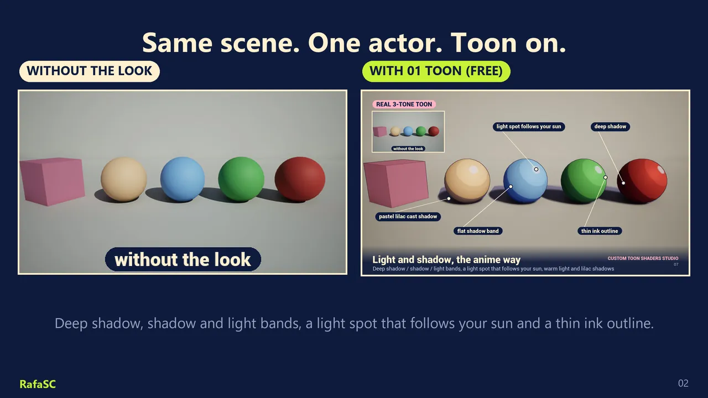
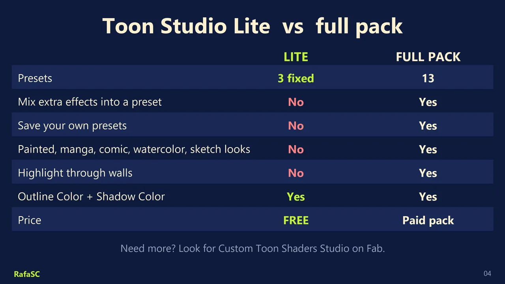
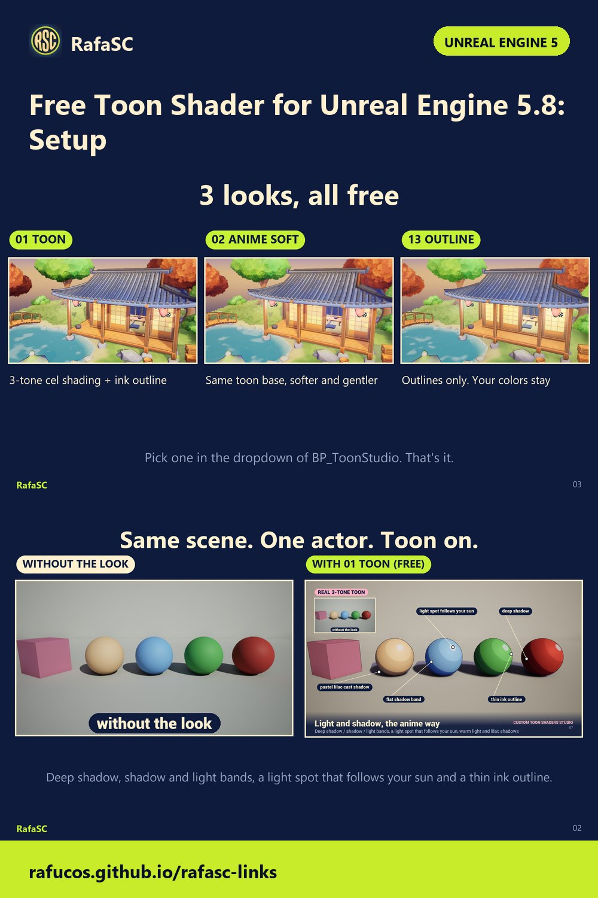

Free
Free toon shader for Unreal Engine 5.8: Toon Studio Lite
Toon Studio Lite is a free toon shader for Unreal Engine 5.8. You drag one actor into the level and the whole scene gets a 3-tone cel look with an ink outline, without editing a single material. It ships three looks: Toon, Anime Soft and Outline.
By RafaSC, 3D and technical artist · Updated · 5 min read

Install in one minute
- Add the pack to your project from Fab. It lands in
Content/ToonStudio. - Drag BP_ToonStudio (
Content/ToonStudio/Blueprints) into your level. The default look is 01 Toon. - Select the actor, then Details > Toon Studio > Preset, and choose a look.
You do not need a Post Process Volume: the actor carries its own, set to affect the whole level. It also switches on Custom Depth-Stencil (Enabled with Stencil) for you. If you ship a packaged game, set that once in Project Settings > Rendering as well, so it is on from the first frame.
To look around first, open Demo/L_ToonStudio_Demo, press Play, fly with WASD and the mouse, and use the left and right arrow keys to cycle the three looks.
The three looks

| Preset | What it looks like | Best for |
|---|---|---|
| 01 Toon | Classic 3 flat tones, a light spot that follows your sun, bold line, stylized sun shadows | Anime, characters |
| 02 Anime Soft | Pastel high-key tones with soft edges, lilac shadows, coloured line | Cozy games |
| 13 Outline | Only a clean outline, your art untouched | Any style |

Settings worth knowing
- Look Amount: 0 is off, 1 is full.
- Split Compare: drag from 0 to 1 to see before and after side by side, with the same exposure on both sides.
- Quality: 1 is best, 0 is fast (fewer shadow samples).
- Customize: Outline Color and Shadow Color (click +, pick the colour name, choose the colour), plus Saturation, Contrast and Brightness. Nothing here modifies any material.
- Sun direction: the tone bands and the light spot follow your Directional Light, which the actor finds automatically. To see the bands follow the sun live while you rotate it in the editor, enable Atmosphere Sun Light on that light.
One optional project setting helps: Project Settings > Rendering > Generate Mesh Distance Fields. With it, the stylized sun shadows also come from objects outside the screen, such as a tree canopy above the camera. Without it everything still works and shadows come only from what is visible.
What the free version does not include
The three presets are fixed. The Lite has no effect mixing, no Save Preset, no painted, comic, manga, watercolor or sketch looks, no fog and no per-object highlight outlines. Those are in the full pack, Custom Toon Shaders Studio.

Good to know
- Unreal Engine 5.8 only. Tested on Windows (DX12, SM6). Content-only: no plugins, no C++.
- Deferred renderer required, which is the Unreal default. The Forward renderer does not expose the G-Buffer to post process, so no post-process toon pack can work there.
- Auto exposure is measured after post-process materials, so adding any post-process material can shift it a little. To compare fairly use Split Compare or Look Amount = 0 instead of deleting the actor.
- Unlit and emissive materials are kept as they are.
- Cost: at 1080p on an RTX 3080 the three presets cost 0.3 to 1.1 ms.
Unreal Engine 5.8 also has its own toon shading inside Substrate. It works per material instead of on the whole frame; the differences are in built-in toon shader vs post-process toon.
Watch the full walkthrough
Custom Toon Shaders Studio: toon shader for Unreal Engine 5.8 (13 styles) · Watch on YouTube
Frequently asked questions
Is Toon Studio Lite really free?
Yes. It is a free listing on Fab with three fixed looks: 01 Toon, 02 Anime Soft and 13 Outline.
Does the free toon shader work in Unreal Engine 5.5 or 5.7?
No. Toon Studio Lite is for Unreal Engine 5.8 only.
Do I have to change my materials?
No. It is a post process carried by one actor, BP_ToonStudio. Your materials are not modified.
Why do the shadows disappear when the tree is off screen?
Enable Generate Mesh Distance Fields in Project Settings > Rendering. For thin or open meshes also enable Generate Distance Field As If Two-Sided in the mesh build settings.
Related guides

Save this guide for later. Product used on this page: Custom Toon Shaders Studio.